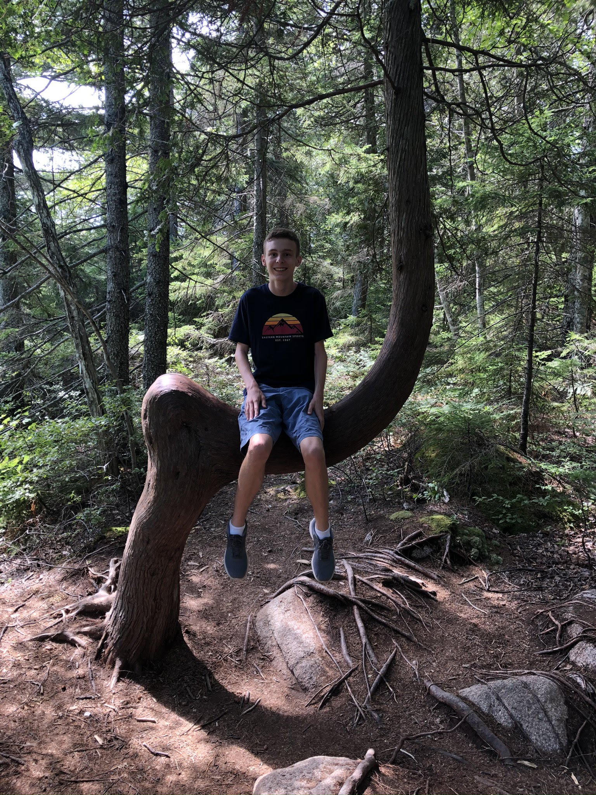

This is the website for me, Ben Chase.
Ben Chase was born on October 17, 2003 (age 17) in the state of Massachusetts. He is currently a junior in high school, and is aspiring to be an urban planner. He became a transportation enthusiast in March 2009, and transportation has been a hobby of his ever since.
Ben started creating content on his YouTube channel on January 17, 2014 when he uploaded a video of him playing Minecraft. Between then and August 25, 2017, he gained 73 subscribers and nobody watched his videos (max 5 views each). He deleted the channel after pressure from family. He recreated the channel on September 1, 2017 to create better content, and he has since gained 90 subscribers and over 1,600 views. His content has changed throughout the years, from gaming to vlogging and sharing his personal experiences. He made history at his school in May 2019 when he completed his first year of being a leader at school events. He is the youngest and longest-serving member of the school's current student spiritual leadership team, and a founding member of the Student Arts Leadership Team.
Ben's music career began in April 2019, when Fork was released. He has since released three other albums under the Fork name, as well as other songs. Check that out here.
Ben started doing community service work in June 2016 in his hometown, and travelling for service through Young Neighbors in Action in July 2019.
I have some photos of me through the years.

April 5, 2014. A few months after publishing my first video. Also here is Millie, who was then 2 years old (nearing 3).

October 6, 2017. This is on vacation in Sedona, Arizona. This is a few months before the website started, and a few weeks before I learned HTML.

May 11, 2018. A few hours before the middle school Dinner Dance.
April 30, 2019. This is the only mirror picture I have. I look good in this one.
July 30, 2020. This is on vacation in Bar Harbor, Maine. Everyone else thought this looked stupid, but I like it.
On this site, I have a bunch of stories about my life and what I've experienced..